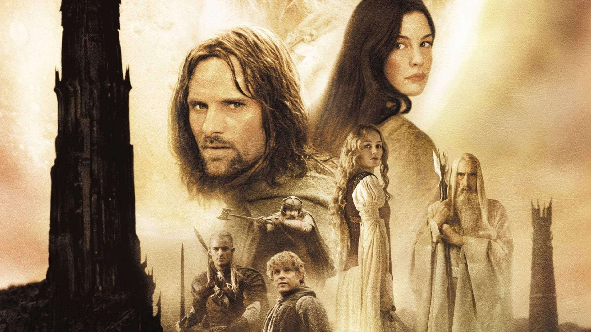
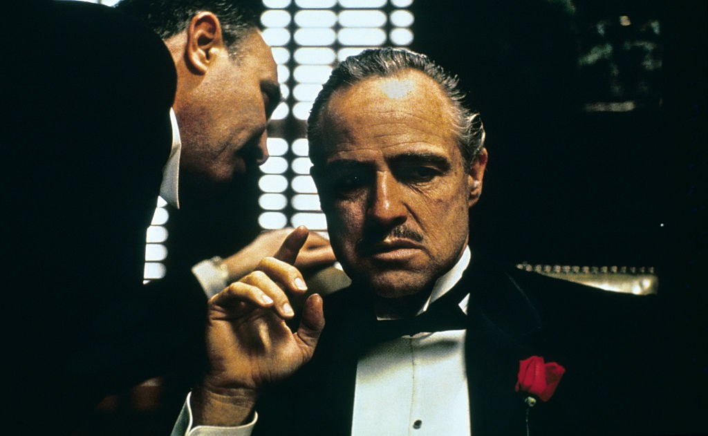
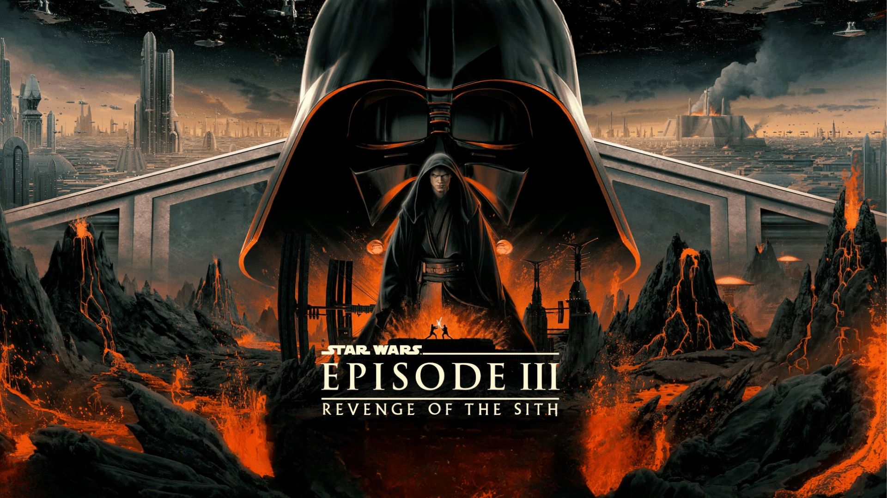

Senhor dos Anéis: As Duas Torres
Esse filme, lançado em 2002, marcou minha infância e adolescência. Sendo o segundo da trilogia do "Senhor dos Anéis" de Peter Jackson, criei muitas memórias vendo e revendo esse filme. É um dos meus favoritos principalmente pela trama entorno da volta de Gandalf e a Batalha de Helm's Deep, uma das melhores de todo o cinema (na minha opinião).
Poucas trilogias/filmes são capazes de rivalizar o impacto que "Senhor dos Anéis" teve na minha formação. Ainda me inspiro muito nos personagens e me tornei um grande fã de J.R.R. Tolkien por essa magnífica obra.
O Poderoso Chefão
Lançado em 1972, o Poderoso Chefão teve um marco na minha adolescência. O filme, apresentado por meu irmão a mim, é uma das melhores obras do cinema e possui lições valiosas, mesmo que venham de personagens tão cinzentos e nebulosos. Além disso, o filme contém atuações impecáveis (principalmente a de Marlon Brando) que deixam a experiência muito melhor e conecta você com os personagens.
Star Wars: A Vingança dos Sith
Star Wars é uma franquia que eu amo. A Vingança dos Sith, de 2005, tem um lugar especial nessa minha coleção de filmes. Isso pois a trama teve um grande impacto para mim que, inicialmente, decidi ver os filmes por ordem numérica - desconhecendo que o famoso vilão Darth Vader era o jovem Cavaleiro Jedi, Anakin Skywalker. Além do mais, meu desconhecimento da Ordem 66 e o destino da Ordem Jedi tornou toda a experiência ainda mais impactante. Além de tudo isso, as lutas são as melhores dentre toda a franquia (vide Obi-wan vs Anakin em Mustafar).
É uma experiência única que guardarei para sempre na memória.